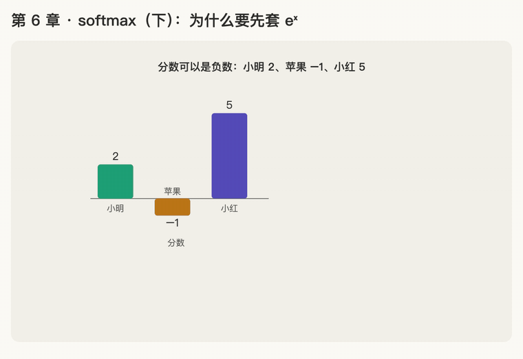

第 6 章 · softmax（下）：为什么要先套 \(e^{x}\)
本章回答：既然"除以总分"就能得到比例，softmax 为什么还要多套一步 \(e^{x}\)？
讲解日期：2026-10-26 · 上一章：第 5 章 次方与 e · 下一章：第 7 章 softmax 饱和
本章缩写：\(d_k\)：k = key，每个 key 向量有几个数（64）；softmax = soft（柔和的）+ max（取最大）：按大小分比例，不是只挑最大的；exp = exponential（指数）：exp(x) = eˣ；RNN = Recurrent Neural Network（循环神经网络）；CS336 = Stanford 课程 CS 336（Computer Science 336，Language Modeling from Scratch）。全部缩写见 附录 · 缩写与术语表
公式
读作：p_j 等于 e 的 s_j 次方，除以所有 e 的 s_k 次方之和。 和朴素版（第 3 章）唯一的区别：每个分数先变成 \(e^{\text{分数}}\)，再除以总和。
讲解
原因 1：分数可能是负数
点积可以算出负数（某些位置一正一负，乘出来是负的）。假设分数是：
| 词 | 分数 |
|---|---|
| 小明 | 2 |
| 苹果 | −1 |
| 小红 | 5 |
朴素版：总分 6，苹果 = −1 ÷ 6 ≈ −0.167，注意力是负的。但注意力只能"多看"或"少看"，最少就是"不看"（0），不可能"负着看"。另外，分数总和恰好为 0 时还会除以 0。
\(e^{x}\) 永远是正数（第 5 章），先套上再除以总和，比例一定在 0 到 1 之间：
| 词 | 分数 | \(e^{x}\) | 比例（÷156.17） |
|---|---|---|---|
| 小明 | 2 | 7.389 | 0.047 |
| 苹果 | −1 | 0.368 | 0.002 |
| 小红 | 5 | 148.413 | 0.950 |
| 合计 | 156.170 | 1 |
原因 2：拉开差距
分数每多 1，\(e^{x}\) 就多乘一次 2.718。
| 小红 | 小明 | 小红是小明的几倍 | |
|---|---|---|---|
| 原始分数 | 5 | 2 | 2.5 倍 |
| 套 \(e^{x}\) 后 | 148.4 | 7.4 | ≈ 20 倍 |
只差 3 分，套上后差了 \(e^3\approx20\) 倍。高分更高，低分相对更低。 同一组分数 [2, 1, 5]：
| 词 | 朴素版比例 | softmax 比例 |
|---|---|---|
| 小明 | 25% | 4.7% |
| 苹果 | 12.5% | 1.7% |
| 小红 | 62.5% | 93.6% |
代入第 4 章的取信息（小红的信息向量是 [10, 10]）：
| 朴素版 | softmax | |
|---|---|---|
| "她"的新向量 | [6.25, 8.75] | [9.36, 9.83] |
| 离小红 [10, 10] | 比较远 | 几乎一样 |
朴素版里"她"有 37.5% 的信息来自小明和苹果，混进了不相关的东西；softmax 里"她"几乎完全变成"小红"。
小结
套 \(e^{x}\) 的两个原因：
- 保证比例都是正数（不会出现负的注意力）
- 拉开差距（让注意力集中在相关的词上）
动画演示：负分数会出错；套 eˣ 后都是正数，还拉开差距

可交互版：animations/06-softmax-exp.html（要能点按钮、拖滑块，需要用本地服务打开，见 animations/README.md"跑起来看"）。
怎么看：
- 分数 [2, −1, 5]：朴素版算出苹果 −0.167，注意力是负的（原因 1）；
- 先套 \(e^x\)：7.389、0.368、148.4，全是正数，再除以总和；
- 同一组 [2, 1, 5]：朴素版小红 62.5%，softmax 93.6%（原因 2，拉开差距）；
- 滑块：拖苹果的分数，上面朴素版一变负就出错，下面 softmax 永远正常。
练习与作答记录
题 1：分数 [2, −1, 5]，用朴素版算苹果的比例，有什么奇怪的地方？
作答："−1 占比是负的，但是实际上不可能。" ✓
题 2：朴素版 62.5% 和 softmax 93.6%，判断"她"指谁时哪个更好？为什么？
作答："因为有效的部分被放大比例。" ✓
点评：说到点子上了。补充另一半：无关的部分（苹果）同时被压小，取信息时几乎不混进来。
本章复习卡片
R08 softmax 公式 + 原因 1 · R11 原因 2（见 review.md）
附录 · 延伸阅读
留给以后深入学习用，不影响本章主线。★ 是建议先读的。
- 本地论文的文本版在materials/text/papers/，表里的行号就是指这个文本版。
- CS336 handout 在cs336-spring2025/materials/text/cs336_spring2025_assignment1_basics.txt。
推荐阅读
| 读什么 | 读哪里 | 读它为了什么 |
|---|---|---|
| ★ CS336 a1 handout | §3.5.4 式 (10) 及其后一段（L1137–L1147） | 作业里的 softmax：先减去最大值，防止溢出 |
| ★ Milakov & Gimelshein 2018, Online Normalizer Calculation for Softmax | Algorithm 1–3 | 从朴素 softmax → 安全 softmax → 边读边算的 online softmax；FlashAttention 的基础（阶段 E） |
| Goodfellow《Deep Learning》 | §4.1 Overflow and Underflow、§6.2.2.3 Softmax Units | softmax 的数值稳定性 |
| Katharopoulos et al. 2020, Transformers are RNNs | §3.2 Linearized Attention | 如果不用 \(e^{x}\)，换成别的函数会怎样（阶段 F 线性注意力） |
数学原理
- 平移不变：所有分数同时加或减同一个数，softmax 结果不变。所以实现时先减去最大值，避免 \(e^{x}\) 太大溢出。
- 比例只看差值：两个词的比例之比，只取决于它们分数的差，和分数本身多大无关。
- 温度 temperature：分数先除以 T 再 softmax。T 小 → 差距更大（更"尖"）；T 大 → 更平均。第 8 章的 \(\sqrt{d_k}\) 本质上就是一个固定的温度。
- log-sum-exp：softmax 分母取对数，是交叉熵 loss 和 online softmax 的核心。
公式清单
| 公式 | 意思 |
|---|---|
| \(p_i = \frac{e^{s_i}}{\sum_j e^{s_j}}\) | softmax |
| \(\text{softmax}(\mathbf s + c) = \text{softmax}(\mathbf s)\) | 平移不变 |
| \(\frac{p_i}{p_j} = e^{s_i - s_j}\) | 比例之比只看分数差 |
| \(p_i = \frac{e^{s_i / T}}{\sum_j e^{s_j / T}}\) | 带温度的 softmax |
| \(\log p_i = s_i - \log \sum_j e^{s_j}\) | log-softmax（log-sum-exp） |